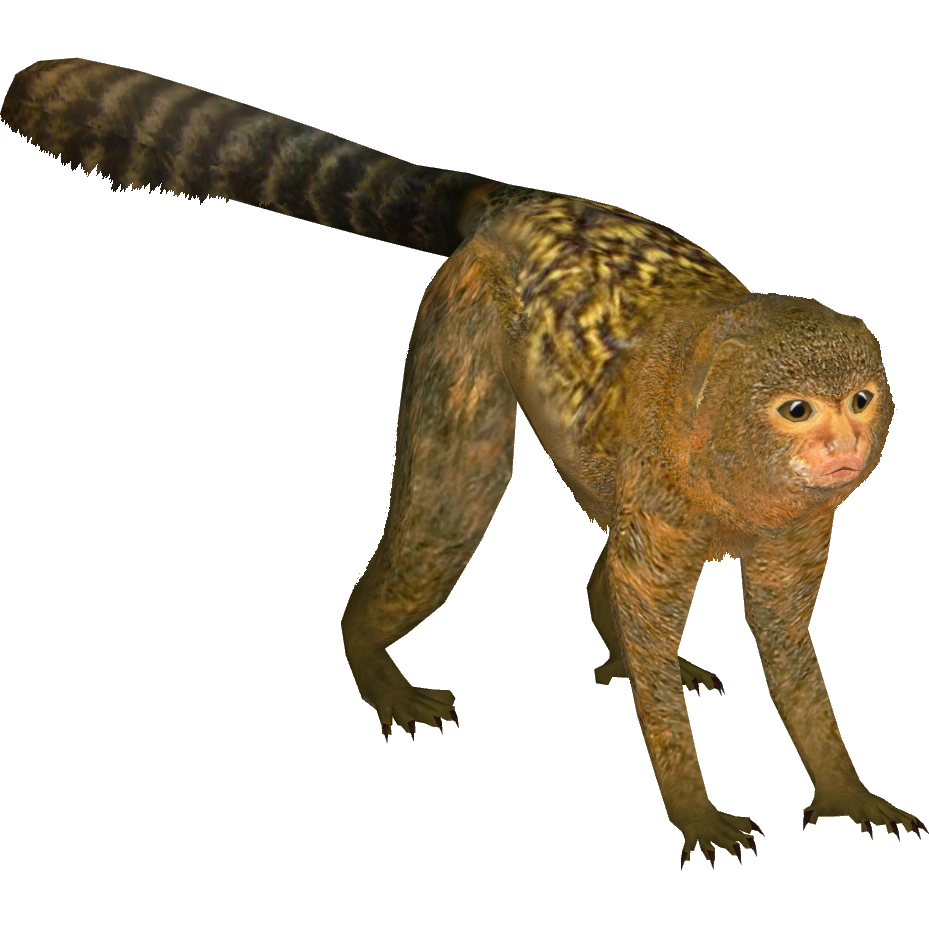

wow, now this is some great news. like humans, dolphins, and elephants, monkeys(even tiny little sweeties like marmosets) do in fact have names with which they use to communicate with and address other monkeys! it was initially thought that monkey communication was genetically determined and non-flexible, but it turns out monkeys have flexible vocabularly meaning they can create unique calls in order to effectively communicate.
and it doesn't stop there. marmosets of the same family group use similar vocal labels to address different individuals, much like the use of names and dialects in human language. marmosets that aren't blood-related can even learn vocal labels and dialects from other members of the same group!
this study leaves me wondering: do monkeys gossip?
anyways i think we should leave the monkeys alone, not lock them up in metal cages and subject them to strange experimentation and deprive them of their animal right to a normal, natural, tree-dwelling life ):
marmoset facts: there are twenty two different types of marmosets! they are a new world monkey, meaning they are found in the americas and broad noses, wide set nostrils, and poorer hand dexterity compared to old world monkeys due to a less developed or complete lack of a thumb. many new world monkeys have prehensile tails, great for swinging in the tree tops. despite the extreme intelligence of marmosets, they lack wisdom teeth(lucky). they can largely be found in bolivia, brazil, colombia, ecuador, paraguay, and peru. they eat insects, fruits, and leaves and harvest tree gum by biting into tree trunks. they live in family groups of 3-15 which can include unrelated individuals. male marmosets are very involved with the care of the young and will even assist in the birth of their offspring! wish i was a marmoset
thank you for tuning in to the first installation of monkey news